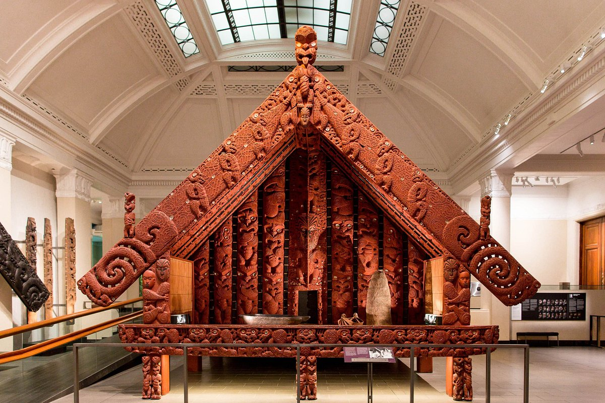
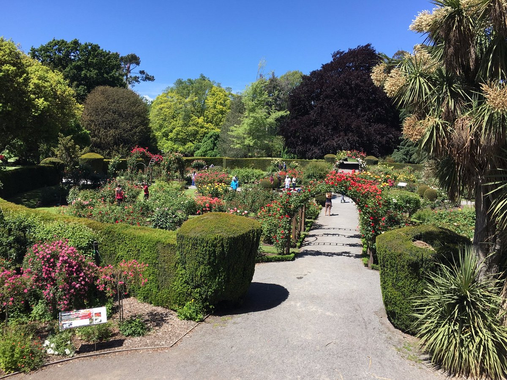

Milford Sound
Milford Sound, a breathtaking fjord in Fiordland National Park, renowned for its towering cliffs, stunning waterfalls, and rich wildlife. It's often shrouded in mist, adding to its mystical allure.
Wai-O-Tapu Thermal Wonderland
Wai-O-Tapu Thermal Wonderland is a geothermal park near Rotorua, known for its vibrant hot springs, bubbling mud pools, and the iconic Lady Knox Geyser. The stunning Champagne Pool and unique landscapes showcase the area's geothermal activity.
Sky Tower
The Sky Tower in Auckland is a striking observation and telecommunications tower, standing at 328 meters. It offers panoramic views of the city and beyond, with a revolving restaurant and thrilling activities like skywalks and bungee jumps for the adventurous.
Museum of New Zealand Te Papa Tongarewa
The Museum of New Zealand Te Papa Tongarewa is a national museum located in Wellington. It features interactive exhibits that celebrate New Zealand's art, history, and cultural heritage, including Māori and Pacific Islander collections. Its innovative displays and immersive experiences make it a key destination for understanding the country's unique identity.
Mount Eden
Mount Eden is a dormant volcano located in Auckland, offering stunning panoramic views of the city and its surroundings. Known for its lush green slopes and a deep crater, it's a popular spot for walking and picnicking, providing a glimpse into Auckland's volcanic landscape.
Redwoods, Whakarewarewa Forest
Redwoods, Whakarewarewa Forest near Rotorua features towering Californian redwood trees in a stunning natural setting. The forest offers a range of walking and biking trails, showcasing its diverse ecosystems and beautiful landscapes, making it a favorite for outdoor enthusiasts.
Te Puia

Te Puia is a geothermal park and cultural center located in Rotorua, showcasing the region's stunning geothermal features, including geysers, hot springs, and mud pools. It is also home to the New Zealand Māori Arts and Crafts Institute, where visitors can experience traditional Māori culture through performances, workshops, and exhibits, making it a unique blend of natural beauty and cultural heritage.
Auckland Museum
The Auckland Museum is a prominent cultural institution showcasing New Zealand's natural and social history. It features extensive collections of Māori and Pacific artifacts, military history exhibits, and interactive displays, offering insights into the country's heritage and biodiversity. The museum is set in a grand heritage building, surrounded by the beautiful Auckland Domain.
Waitomo Glowworm Caves
The Waitomo Glowworm Caves are renowned for their mesmerizing display of glowworms illuminating the dark caverns. Visitors can take guided boat tours through the caves, where they'll experience the enchanting blue-green lights while learning about the unique geology and ecosystem of the area.
Christchurch Botanic Gardens
The Christchurch Botanic Gardens is a picturesque oasis in the heart of Christchurch, featuring beautifully landscaped gardens, diverse plant collections, and tranquil waterways. Visitors can enjoy walking paths, a stunning rose garden, and historic conservatories, making it a perfect spot for relaxation and exploration.